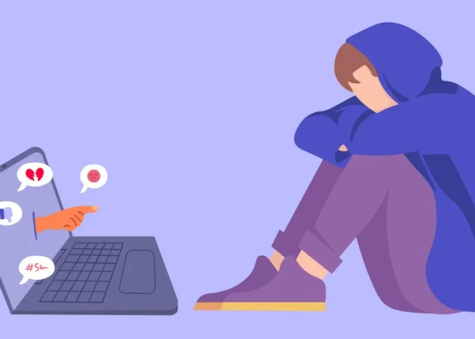
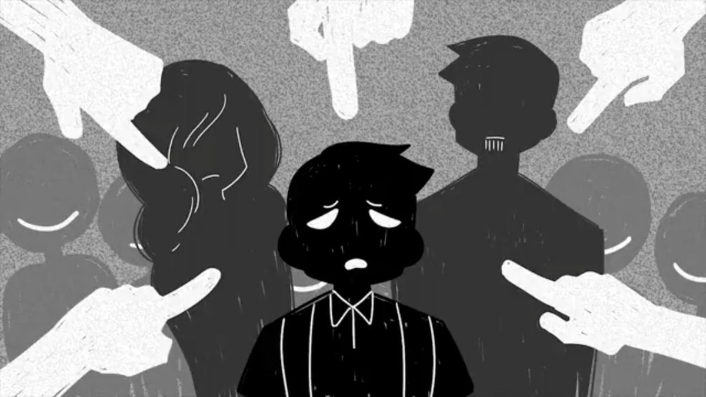
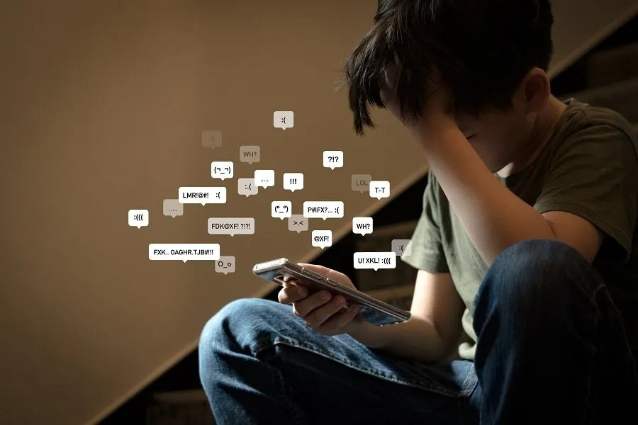
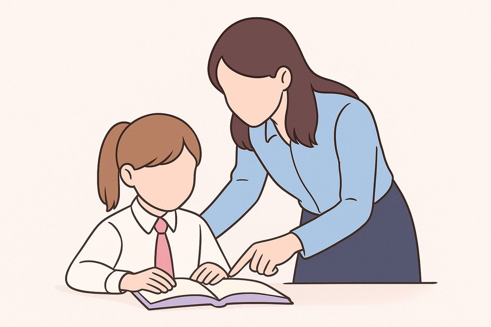

A internet transformou a maneira como as pessoas estudam, trabalham, se comunicam e constroem relacionamentos. Porém, o ambiente digital também pode ser utilizado para práticas de violência, humilhação e perseguição.
Entre essas práticas está o cyberbullying, uma forma de intimidação e violência psicológica realizada por meio de redes sociais, aplicativos de mensagens, jogos on-line, fóruns e outras plataformas digitais.
Combater o cyberbullying é uma responsabilidade de todos: vítimas, familiares, escolas, plataformas digitais, sociedade e poder público.

Mas o que é o cyberbullying?
Cyberbullying é a prática de intimidação, humilhação, ameaça, discriminação ou violência psicológica realizada por meios digitais.
A legislação brasileira define o bullying como uma forma de intimidação sistemática, caracterizada por atos intencionais e repetitivos de violência física ou psicológica. A Lei nº 13.185/2015 também reconhece especificamente o cyberbullying quando são utilizados recursos da internet para depreciar alguém, incentivar violência ou adulterar fotos e dados pessoais com o objetivo de causar constrangimento psicossocial.
O cyberbullying pode acontecer em:
Exemplos que caracterizam o cyberbullying
Uma característica importante do cyberbullying é que o conteúdo ofensivo pode alcançar muitas pessoas rapidamente e permanecer disponível na internet, aumentando o alcance da violência.
Principais fatores que impulsionam o cyberbullying
O cyberbullying não possui uma única causa. Ele pode estar relacionado a fatores individuais, sociais, familiares, escolares e culturais.

Anonimato e sensação de impunidade
Na internet, algumas pessoas acreditam que não serão identificadas ou responsabilizadas por aquilo que publicam. Essa sensação pode facilitar comportamentos agressivos.
Pressão do grupo
O desejo de ser aceito por determinado grupo pode levar pessoas a participar de ataques virtuais, mesmo quando não iniciaram a agressão.
Falta de empatia
A distância proporcionada pela tela pode dificultar a percepção das consequências emocionais que uma determinada mensagem pode provocar em outra pessoa.
Busca por popularidade
Comentários ofensivos, vídeos constrangedores e provocações podem ser utilizados por algumas pessoas para conseguir curtidas, visualizações ou reconhecimento dentro de um grupo.
Preconceito e discriminação
Características como aparência física, origem, condição social, deficiência, orientação sexual, identidade, religião ou outros aspectos podem ser utilizados como justificativa para ataques.
Falta de educação digital
A ausência de orientação sobre cidadania digital, privacidade, respeito e responsabilidade pode contribuir para comportamentos inadequados no ambiente virtual.
Conflitos presenciais
Problemas que começam na escola, na família ou em outros espaços podem continuar nas redes sociais e assumir proporções maiores.
Por que o problema pode ser tão grave?
O cyberbullying pode provocar consequências emocionais, sociais e educacionais. A vítima pode apresentar medo, isolamento, queda no rendimento escolar, perda de confiança e dificuldade de convivência.
Por isso, o problema não deve ser tratado simplesmente como uma "brincadeira". Quando existe humilhação, perseguição ou violência, é necessário buscar ajuda e interromper a situação.

O que a vítima pode fazer?
Combater o cyberbullying exige mais do que simplesmente retirar uma publicação. É necessário prevenir, identificar e interromper comportamentos violentos.
Responder agressivamente pode aumentar o conflito. Sempre que possível, é melhor não alimentar a interação.
Mensagens, imagens, vídeos, links, nomes de usuários e capturas de tela podem ajudar a demonstrar o que aconteceu.
As próprias plataformas normalmente oferecem ferramentas para bloquear ou restringir usuários.
Utilize os mecanismos de denúncia disponibilizados pela rede social, aplicativo, jogo ou site.
Pais, responsáveis, professores, coordenadores, orientadores e outros adultos podem ajudar a encontrar uma solução.
Quando a situação envolver violência, ameaça ou possível crime, pode ser necessário procurar as autoridades responsáveis.
O papel da escola
A escola possui papel fundamental na prevenção do cyberbullying. Algumas medidas importantes são:

A Lei nº 13.185/2015 determina que estabelecimentos de ensino adotem medidas de conscientização, prevenção, diagnóstico e combate ao bullying.
Leis
O Brasil possui legislação específica relacionada ao bullying e ao cyberbullying.
Lei nº 13.185/2015
A Lei nº 13.185, de 6 de novembro de 2015, instituiu o Programa de Combate à Intimidação Sistemática (Bullying).
A lei define a intimidação sistemática como uma prática de violência física ou psicológica, intencional e repetitiva, praticada individualmente ou em grupo.
Ela também reconhece o cyberbullying como uma forma de intimidação sistemática realizada por meio da internet.
Lei nº 14.811/2024
Um importante avanço ocorreu com a Lei nº 14.811/2024. Essa lei acrescentou ao Código Penal o artigo 146-A, que passou a prever o crime de intimidação sistemática, ou bullying. A legislação estabelece:
Bullying: pena de multa, quando a conduta não constituir crime mais grave.
Cyberbullying: quando a intimidação sistemática é realizada por meio de redes de computadores, redes sociais, aplicativos, jogos on-line ou outros ambientes digitais, a pena prevista é de reclusão de 2 a 4 anos e multa, caso a conduta não constitua crime mais grave.
A existência do crime de cyberbullying não significa que toda discussão ou comentário desagradável na internet seja automaticamente cyberbullying. A caracterização jurídica depende das circunstâncias concretas e da aplicação da legislação pelas autoridades competentes. Além disso, uma mesma situação pode envolver outros crimes ou infrações, dependendo do comportamento praticado.
Sameer Hinduja
- Pesquisador de cyberbullying
Sameer Hinduja é um dos maiores especialistas mundiais no estudo do cyberbullying e co-diretor do Cyberbullying Research Center.
Hinduja defende que o cyberbullying afeta as vítimas de forma potencialmente mais severa do que o bullying tradicional face a face. Os motivos apontados por ele incluem o público muito maior (que pode se juntar à agressão) e a longevidade do conteúdo nocivo, que permanece online e acessível a menos que seja removido prontamente pelas plataformas. Isso intensifica os danos emocionais, psicológicos e o risco de ideação suicida ou automutilação.
“A audiência e a permanência dos comentários prejudiciais podem aumentar os efeitos emocionais e psicológicos negativos.”
- Sameer Hinduja
Para refletir
O problema do cyberbullying mostra que a tecnologia não é, por si só, boa ou ruim. O impacto depende da maneira como ela é utilizada. Uma publicação pode informar, ensinar e aproximar pessoas - mas também pode ser utilizada para humilhar e ferir. Por isso, antes de publicar, compartilhar ou comentar algo sobre outra pessoa, é importante perguntar:
"Como a pessoa se sentirá ao ver isso?"
DISQUE 100 - Denuncie
Você não precisa enfrentar o cyberbullying sozinho.
O Disque 100 — Disque Direitos Humanos é um serviço público destinado ao recebimento de denúncias de violações de direitos humanos. O serviço atende denúncias envolvendo, entre outros grupos, crianças e adolescentes, inclusive situações que acontecem no ambiente digital.

Como denunciar?
Telfone: 100
O serviço é:
As denúncias podem ser anônimas e são encaminhadas aos órgãos competentes para análise e providências. Também existem outros canais digitais, como o WhatsApp. O Ministério dos Direitos Humanos e da Cidadania informa o número (61) 99611-0100 para atendimento pelo WhatsApp.
NÃO SE CALE
O cyberbullying pode acontecer por trás de uma tela, mas suas consequências acontecem na vida real.
Não compartilhe a humilhação.
Não incentive a violência.
Não seja espectador de uma agressão.
Denuncie
Peça ajuda
A internet deve ser um espaço de informação, comunicação e convivência - e não um lugar onde a violência seja normalizada.
Respeito também é responsabilidade digital.
Fontes
O site da SaferNet também mantém uma Central Nacional de Denúncias de Crimes Cibernéticos, voltada a determinados tipos de conteúdo criminoso na internet.